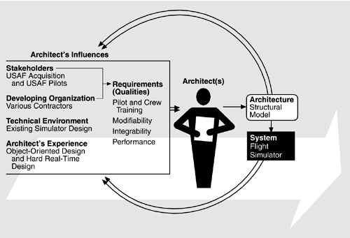

| [ Team LiB ] |
|
8.1 Relationship to the Architecture Business CycleThe segment of the Architecture Business Cycle (ABC) that connects desired qualities to architecture is the focus of this case study. Figure 8.1 shows the ABC for Structural-Model-based flight simulators. The simulators discussed in this chapter are acquired by the U.S. Air Force. Their end users are pilots and crews for the particular aircraft being simulated. Flight simulators are used for pilot training in the operation of the aircraft, for crew training in the operation of the various weapons systems on board, and for mission training for particular missions for the aircraft. Some simulators are intended for standalone use, but more and more are intended to train multiple crews simultaneously for cooperative missions. Figure 8.1. Initial stages of the ABC for the flight simulator The flight simulators are constructed by contractors selected as a result of a competitive bidding process. The simulator systems are large (some as large as 1.5 million lines of code), have long lifetimes (the aircraft being simulated often have lifetimes of 40 years or longer), and have stringent real-time and fidelity requirements (the simulated aircraft must behave exactly like the real aircraft in situations such as normal flight, emergency maneuvers, and equipment failures). The beginning of the Structural Model pattern dates from 1987 when the Air Force began to investigate the application of object-oriented design techniques. Electronic flight simulators had been in existence since the 1960s, and so this investigation was motivated by problems associated with the existing designs. These included construction problems (the integration phase of development was increasing exponentially with the size and complexity of the systems) and life-cycle problems (the cost of some modifications was exceeding the cost of the original system). The Structural Model pattern was able to overcome these problems, as we will see. It has been used in the development of the B-2 Weapons System Trainer, the C-17 Aircrew Training System, and the Special Operations Forces family of trainers, among others. |
| [ Team LiB ] |
|